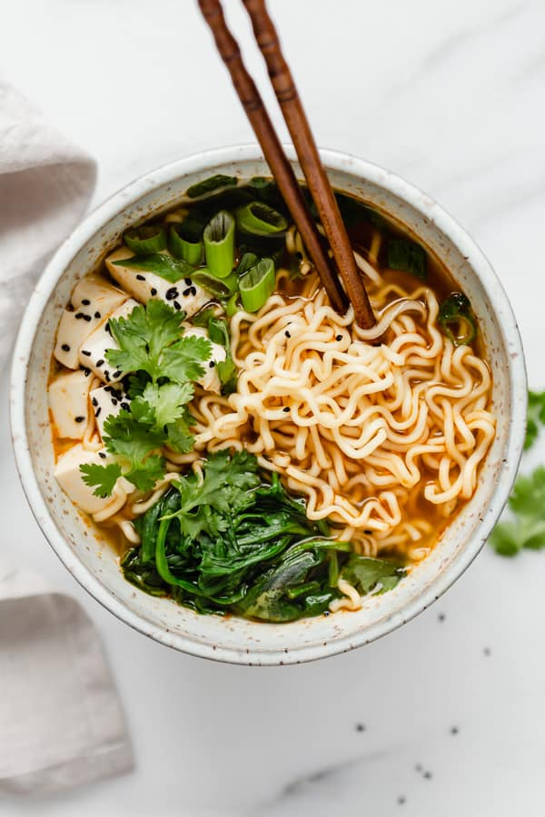

Ramen
 2 bowls
2 bowls 30 minutes
30 minutes Veggie
Veggie Umami
Umami

2 clovesgarlic, diced3shallots, minced
Heat the oil in a pan. Add the garlic and shallots, frying for a few minutes.
3 tbspsoy sauce2 tbsprice vinegar1 tbspsesame oil1 Lvegetable stock
Add the soy sauce and rice vinegar, then the stock and let simmer for 5 minutes.
60 gshiitake mushrooms
Add mushrooms and let simmer for 10 minutes.
2eggs
While the soup simmers, cook the eggs in boiling water for 10 minutes.
2 portionsnoodle
Add the noodles and cook until ready.
50 gcarrots, grated1 tspsesame seed- Baby spinach
Finally serve in bowls, add the carrots, spinach and sesame seeds in each bowl.